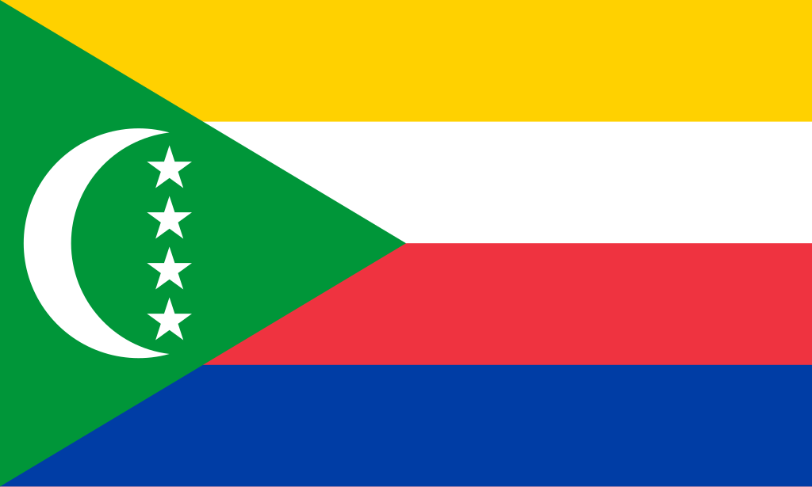

Comores
 As Comores, oficialmente União das Comores, são um pequeno arquipélago localizado no Oceano Índico, na costa leste da África, entre Moçambique e Madagascar. O país é composto por três ilhas principais — Grande Comore (Ngazidja), Anjouan (Ndzuwani) e Mohéli (Mwali) — além de várias ilhotas menores. A quarta ilha do arquipélago, Mayotte, continua sob administração francesa, embora seja reivindicada pelas Comores. Com uma área de apenas 2.235 km² e cerca de 900 mil habitantes, o país é um dos menores do continente africano tanto em território quanto em população. A capital é Moroni, localizada na ilha Grande Comore, que concentra a maior parte da atividade política, econômica e cultural do país. Historicamente, as Comores foram influenciadas por diversas culturas devido à sua posição estratégica nas rotas comerciais do Oceano Índico, atraindo árabes, persas, africanos e europeus. Essa mistura resultou em uma identidade nacional plural, marcada pelo islã sunita, que é a religião predominante, pela língua francesa (oficial) e pelo comoriano (shikomori, de base suaíli). Apesar de sua riqueza cultural e de suas paisagens tropicais exuberantes, as Comores enfrentam grandes desafios socioeconômicos, como a instabilidade política, a escassez de recursos naturais e a dependência da agricultura e da pesca. O país é membro da ONU, União Africana, Liga Árabe, Organização da Cooperação Islâmica e da Comissão do Oceano Índico, reforçando sua posição estratégica no canal de Moçambique.
História
A história das Comores é marcada pela diversidade de influências externas. Os primeiros habitantes foram povos bantu vindos da costa africana, que se misturaram com navegadores árabes e persas a partir do século IX. Esses contatos introduziram o islã, que rapidamente se enraizou como religião dominante. Durante a Idade Média, as ilhas prosperaram como entreposto comercial, conectando a África Oriental, o Oriente Médio e a Ásia, especialmente na rota do ouro, marfim e especiarias.
No século XVI, navegadores portugueses chegaram à região, seguidos por franceses e britânicos que disputaram a influência no arquipélago. Os franceses acabaram se estabelecendo como potência colonial dominante no século XIX, anexando as ilhas em 1912 como parte de sua colônia de Madagascar. Em 1975, as Comores proclamaram sua independência, exceto Mayotte, que permaneceu sob administração francesa após um referendo. Desde então, o país passou por instabilidade política, com golpes de Estado frequentes e conflitos internos, em especial na ilha de Anjouan, que buscou se separar em diversas ocasiões. Apesar disso, o país vem buscando consolidar suas instituições democráticas nas últimas décadas.
Cultura
A cultura comoriana é um reflexo da fusão entre tradições africanas, árabes, malgaxes, persas e europeias. A religião islâmica desempenha papel central na vida cotidiana, influenciando desde a organização social até as festividades e costumes. O casamento, por exemplo, é um evento de grande importância social, marcado por cerimônias tradicionais e celebrações luxuosas, conhecidas como "grande casamento" (anda na mila), que são símbolo de status e prestígio.
A música e a dança também ocupam lugar especial, com estilos que mesclam ritmos africanos e árabes. Instrumentos como o oud (alaúde árabe) e tambores tradicionais são comuns em celebrações. A gastronomia reflete a diversidade cultural, com pratos típicos baseados em arroz, coco, peixe e especiarias, herdando influências da culinária suaíli e árabe. Linguisticamente, o país é trilíngue: o comoriano (shikomori), o francês e o árabe são as línguas oficiais, representando a identidade multifacetada da nação.


Clima
O clima das Comores é tropical úmido, influenciado tanto pelo Oceano Índico quanto pelos ventos monçônicos. O arquipélago apresenta duas estações principais: a quente e chuvosa, que vai de novembro a abril, marcada por temperaturas médias entre 27°C e 32°C, e a seca e mais fresca, de maio a outubro, com médias de 23°C a 28°C. As ilhas são frequentemente afetadas por ciclones tropicais durante a estação chuvosa, o que pode causar sérios danos à infraestrutura e à agricultura. A elevada umidade e as temperaturas estáveis ao longo do ano criam condições ideais para a vegetação tropical e a agricultura, com destaque para o cultivo de baunilha, cravo-da-índia e ylang-ylang, produtos tradicionais de exportação do país.
Biodiversidade
As Comores abrigam uma biodiversidade notável, tanto terrestre quanto marinha, devido à sua localização insular no Oceano Índico. As ilhas possuem florestas tropicais úmidas que acolhem espécies endêmicas de plantas, aves e répteis. Entre os animais mais emblemáticos está o celacanto, um peixe pré-histórico considerado fóssil vivo, que foi redescoberto nas águas comorianas em 1938. A fauna terrestre inclui morcegos frugívoros gigantes, camaleões, aves tropicais e insetos raros.
No ambiente marinho, recifes de corais abrigam uma grande diversidade de peixes, moluscos e crustáceos, fundamentais tanto para a ecologia quanto para a subsistência das populações locais. Apesar dessa riqueza natural, a biodiversidade das Comores sofre ameaças constantes devido ao desmatamento, à sobrepesca e às mudanças climáticas. Para enfrentar esses desafios, o país conta com reservas naturais e projetos de preservação voltados para a proteção de espécies endêmicas e habitats frágeis.


Cidades
As cidades das Comores são pequenas em comparação a outros países africanos, mas desempenham papel vital na vida econômica e cultural. A capital, Moroni, localizada na ilha Grande Comore, é a maior e mais importante cidade do arquipélago. Moroni é o centro político e administrativo, abrigando o governo e as principais instituições do país. Além disso, é um polo cultural, com mesquitas históricas, mercados vibrantes e o porto mais movimentado das ilhas.
A segunda maior cidade é Mutsamudu, localizada em Anjouan, que se destaca pelo comércio e pela arquitetura árabe-suaíli, com ruas estreitas e construções históricas. Outras cidades importantes incluem Fomboni (em Mohéli), conhecida por seu ritmo de vida mais tranquilo, e Domoni, também em Anjouan, famosa por suas tradições culturais. Embora urbanizadas, as cidades comorianas mantêm um forte vínculo com a vida comunitária e com as práticas tradicionais, refletindo a essência do país.